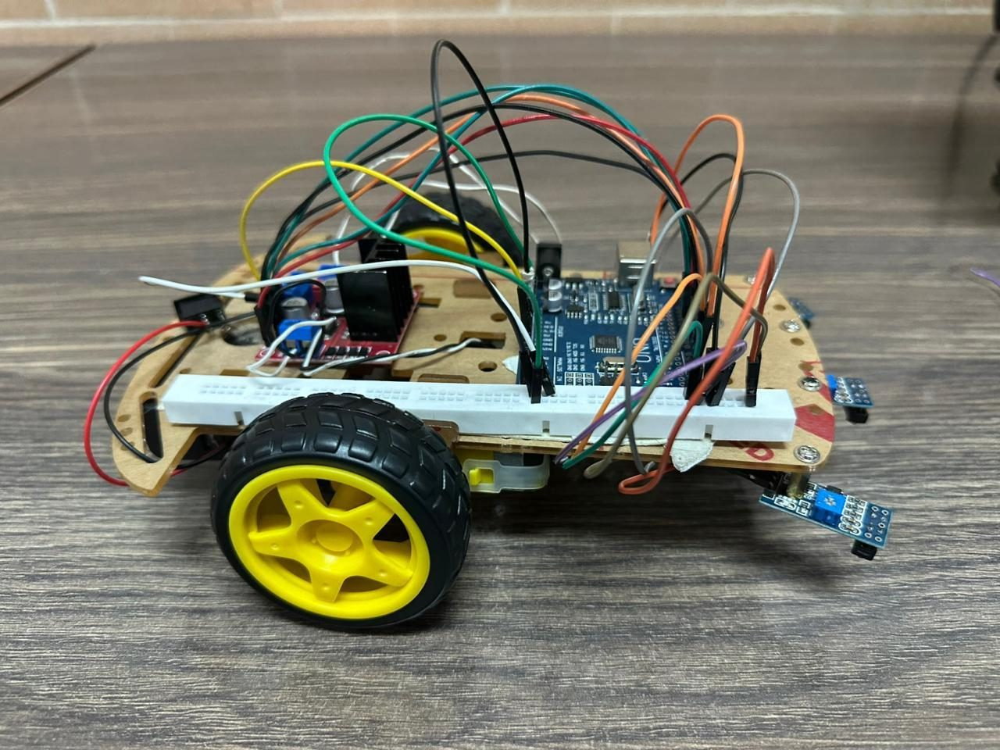

Arduino Line Following Robot
What
Three-wheel robot built and programmed in a mechatronics lab that follows a black line using three IR sensors.
Role
Assembled the acrylic chassis, wired and soldered the Arduino, L298N driver and three IR sensors, and programmed differential steering to follow a black line, in a team of 6.
Results
- Follows a black line on straight and curved paths.
- Arduino Uno and an L298N driver run two DC motors on a 12 V supply.
- Minor oscillations at sharp turns, and it regained the line without help.

Problem
Design, assemble and program a three-wheel line-following robot from an Arduino robotics kit, including chassis, wiring, soldering and code.
Method
- Acrylic chassis with two rubber-tyred DC motors, a front caster wheel and three IR sensors mounted at the front with hot glue.
- Sensors read on digital pins, with an L298N motor driver on PWM pins 5, 6, 9 and 10 and power from three 4 V cells through a switch, with a common ground.
- Control logic adjusts motor speeds differentially to correct direction from the three sensor readings.
Results
The robot followed the predefined black line with minimal deviation on straight sections. On curves, differential motor speed corrected the path, with minor oscillations at sharp turns, and it regained the line on its own. No overheating or significant voltage drop was observed.
Limitations
- No quantitative results such as speed, lap time or accuracy are reported.
- Basic kit-based project.
Tools
- Arduino Uno
- L298N
- IR sensors